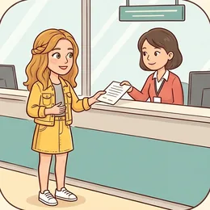

Wer nach Deutschland zieht oder umzieht, muss zuerst zum Bürgeramt. Diese Stunde übt die Sprache dafür: einen Termin machen, Unterlagen nennen, nachfragen, wenn etwas unklar ist.
Dein Niveau
Gleiches Thema, andere Sätze. Wechsle jederzeit — probier ruhig beide Seiten aus.
Der erste Gang, bevor alles andere geht
Ohne Anmeldung gibt es kein Konto, keine Steuernummer, keinen Handyvertrag und keine Krankenversicherung. Deshalb steht sie am Anfang — und deshalb lohnt es sich, die zehn Sätze dafür wirklich zu können.

Warst du schon einmal beim Bürgeramt?
Was war schwierig — die Sprache oder die Formulare?
Wer hat dir damals geholfen?
Was würdest du jemandem raten, der morgen zum ersten Mal hingeht?
Wie läuft so etwas in deinem Herkunftsland?
Woran merkt man, dass man beim falschen Amt gelandet ist?
⚠️ Wichtig vorweg: Diese Stunde übt die Sprache, nicht die Rechtslage. Welche Papiere du brauchst, hängt von deiner Stadt, deiner Staatsangehörigkeit und deinem Grund für den Aufenthalt ab. Verbindlich sagt dir das nur das Amt selbst oder eine Beratungsstelle — die Sätze hier helfen dir, genau das zu erfragen.
Zwei Ämter, zwei ganz verschiedene Dinge
Das Bürgeramt schreibt auf, wo du wohnst. Die Ausländerbehörde entscheidet, ob und wie lange du bleiben darfst. Wer das verwechselt, wartet zwei Stunden am falschen Schalter.
Wie bekommt man in deiner Stadt einen Termin?
Wie lange muss man dort warten?
Was tust du, wenn es online wochenlang keinen freien Termin gibt?
Lohnt es sich, ohne Termin hinzugehen?
🔑 Der nützlichste Satz der ganzen Stunde:„Können Sie mir sagen, welche Unterlagen ich mitbringen muss?“ Damit bekommst du eine Liste — und musst nicht zweimal kommen.
Zwölf Wörter für den Schalter
Sagt jedes Wort laut — mit Artikel. Und gleich den Beispielsatz hinterher: Genau so klingen die Sätze am Schalter wirklich.
die Anmeldung
„Ich möchte eine Anmeldung machen.“
💡 Das Verb ist sich anmelden, trennbar und reflexiv: Ich melde mich an. Beim Wegzug heißt es sich abmelden, beim Umzug ummelden.
das Bürgeramt
„Das Bürgeramt hat dienstags bis achtzehn Uhr auf.“
💡 Je nach Stadt heißt es Bürgerbüro, Einwohnermeldeamt oder Bürgerservice — gemeint ist immer dasselbe.
der Termin
„Ich habe einen Termin um Viertel nach zehn.“
💡 Man bucht oder vereinbart einen Termin, meistens online. Und wenn keiner frei ist: Gibt es auch kurzfristige Termine?
die Wohnungsgeberbestätigung
„Die Wohnungsgeberbestätigung bekomme ich von meiner Vermieterin.“
💡 Ein langes Wort, das du trotzdem brauchst — ohne dieses Papier geht die Anmeldung meistens nicht. Kurzform im Gespräch: die Bestätigung vom Vermieter.
das Formular
„Können Sie mir beim Formular helfen?“
💡 Man füllt ein Formular aus — trennbar. Und wenn ein Feld unklar ist: Was muss hier hinein?
🪪
der Ausweis
„Bringen Sie bitte Ihren Ausweis oder Ihren Pass mit.“
💡 der Personalausweis ist die Karte, der Reisepass das Heft. Am Schalter sagt man einfach Ausweis — gemeint ist das, was du hast.
die Bescheinigung
„Am Ende bekommen Sie eine Bescheinigung.“
💡 Nach der Anmeldung bekommst du die Meldebescheinigung. Heb sie auf — Banken und Arbeitgeber fragen danach.
die Gebühr
„Was kostet das, gibt es eine Gebühr?“
💡 Die Anmeldung selbst ist meistens kostenlos, andere Papiere kosten etwas. Frag immer: Kann ich mit Karte zahlen? — nicht jedes Amt nimmt Karten.
🏛️
die Ausländerbehörde
„Für den Aufenthaltstitel bin ich bei der Ausländerbehörde richtig.“
💡 Nicht dasselbe wie das Bürgeramt. Manche Städte sagen Einwanderungsamt oder Amt für Migration.
🛂
der Aufenthaltstitel
„Mein Aufenthaltstitel läuft im März ab.“
💡 Wichtiges Verb: ablaufen — Der Titel läuft ab. Und man verlängert ihn, am besten Wochen vorher.
die Frist
„Für die Anmeldung gilt eine Frist von zwei Wochen.“
💡 Nach dem Einzug hast du in Deutschland zwei Wochen Zeit. Feste Wendungen: die Frist einhalten, die Frist ist abgelaufen.
🎯
zuständig sein
„Sind Sie dafür zuständig, oder muss ich woanders hin?“
💡 Das Wort, das du an jedem Schalter hörst: Dafür bin ich nicht zuständig. Die richtige Antwort darauf: „Wer ist denn zuständig?“
💡 Spiel „Falscher Schalter“: Einer nennt ein Anliegen (Adresse ändern, Visum verlängern, Steuernummer, Kindergeld). Der andere sagt in fünf Sekunden, zu welchem Amt es gehört — und wenn er es nicht weiß, fragt er richtig nach.
Wer macht eigentlich was?
Drei Ämter, die ständig verwechselt werden. Danach drei Satzpaare, bei denen fast alle danebenliegen.
🏠
Bürgeramt
trägt ein, wo du wohnst. Erste Anmeldung, Umzug, Meldebescheinigung.
Ich möchte mich anmelden.
🛂
Ausländerbehörde
entscheidet über Aufenthalt und Visum. Nur für Menschen ohne deutschen Pass.
Ich möchte meinen Aufenthaltstitel verlängern.
🧾
Finanzamt
kümmert sich um Steuern. Die Steuer-Identifikationsnummer kommt nach der Anmeldung von selbst per Post.
Ich habe eine Frage zu meiner Steuernummer.
✅ So sagt man es
Ich möchte mich anmelden.
Warum das stimmtsich anmelden ist reflexiv und trennbar. Am Schalter reicht dieser eine Satz — alles Weitere fragt die Person selbst.
❌ So nicht
Ich möchte anmelden.
Das ProblemOhne mich fehlt die Person. Anmelden allein bräuchte ein Objekt: Ich melde mein Kind an.
✅ So sagt man es
Können Sie mir sagen, welche Unterlagen ich brauche?
Warum das stimmtEine indirekte Frage: höflicher als die direkte, und das Verb brauche steht am Ende.
❌ So nicht
Können Sie mir sagen, welche Unterlagen brauche ich?
Das ProblemNach dem Komma beginnt ein Nebensatz. Da darf das Verb nicht nach vorn — es gehört ans Ende.
✅ So sagt man es
Mein Aufenthaltstitel läuft im März ab.
Warum das stimmtablaufen ist trennbar: läuft … ab. Und es ist das übliche Wort für Papiere, die ungültig werden.
❌ So nicht
Mein Aufenthaltstitel ist im März fertig.
Das Problemfertig heißt abgeschlossen, nicht ungültig. Bei Dokumenten sagt man abläuft oder ungültig wird.
Vier Sätze, die dich aus jeder Lage holen — auswendig lernen lohnt sich:
Langsamer:Entschuldigung, können Sie das bitte langsamer sagen?
Noch einmal:Das habe ich nicht verstanden. Können Sie es wiederholen?
Aufschreiben:Können Sie mir das bitte aufschreiben? — der wirksamste Satz überhaupt.
Wer sonst:Wer ist denn dafür zuständig? — wenn du am falschen Schalter stehst.
Und einer noch: „Darf ich jemanden anrufen, der übersetzt?“ Das ist erlaubt und wird meistens akzeptiert. Es ist keine Schwäche, sondern eine Lösung.
🎯 Zu zweit, eine Minute: Einer spielt das Amt und redet absichtlich schnell und mit Fachwörtern. Der andere darf nur mit den vier Sätzen oben reagieren — und muss am Ende trotzdem wissen, was zu tun ist.
Vier Bausteine für jeden Behördengang
Anliegen nennen, Unterlagen klären, nachfragen, den nächsten Schritt festmachen. In dieser Reihenfolge — dann vergisst du nichts.
1 · 📣 Anliegen nennen Ich möchte mich anmelden.Ich habe einen Termin um …Ich komme wegen …
So klingt esGuten Tag, ich habe einen Termin um zehn. Ich möchte mich anmelden.
2 · 📄 Unterlagen klären Ich habe den Ausweis dabei.Brauchen Sie noch etwas?Das habe ich leider nicht dabei.
So klingt esIch habe den Pass und die Bestätigung vom Vermieter dabei. Brauchen Sie noch etwas?
3 · ❓ Nachfragen Können Sie das bitte wiederholen?Können Sie mir das aufschreiben?Was muss hier ins Formular?
So klingt esEntschuldigung, das habe ich nicht verstanden. Können Sie mir das bitte aufschreiben?
4 · ✅ Nächsten Schritt klären Was muss ich als Nächstes machen?Wann bekomme ich die Bescheinigung?Muss ich noch einmal kommen?
So klingt esUnd was muss ich als Nächstes machen — bekomme ich die Bescheinigung heute?
1 · 📣 Sachlich einsteigen Ich bin am ersten März eingezogen …Es geht um die Verlängerung meines …Ich habe online einen Termin gebucht.
So klingt esIch bin am ersten März eingezogen und möchte mich innerhalb der Frist anmelden.
2 · 📑 Vollständig auflisten Ich habe folgende Unterlagen dabei: …Falls noch etwas fehlt, reiche ich es nach.Ist eine Kopie ausreichend?
So klingt esIch habe Pass, Wohnungsgeberbestätigung und das ausgefüllte Formular dabei. Falls noch etwas fehlt, reiche ich es gern nach.
3 · 🔍 Genau nachfragen Können Sie mir sagen, ob …?Habe ich richtig verstanden, dass …?Wer wäre dafür zuständig?
So klingt esHabe ich richtig verstanden, dass ich den Termin bei der Ausländerbehörde separat buchen muss?
4 · 🤝 Verbindlich abschließen Bis wann kann ich mit … rechnen?Bekomme ich das schriftlich?Kann ich Sie bei Rückfragen erreichen?
So klingt esBis wann kann ich mit der Bescheinigung rechnen — und bekomme ich sie per Post oder muss ich sie abholen?
Verb das Anliegen Ton und Nachfrage Höflichkeit
📣 Sofort anwenden: Sag deinen Behördengang zu zweit einmal komplett durch — vom Guten Tag bis zum Tschüss. Wer stockt, fängt von vorn an. Nach dem dritten Mal sitzt er.
Vier Situationen — zwei Runden
Runde 1: Lest den Dialog zu zweit laut. Runde 2: Deckt die Zeilen von B ab und sprecht frei — die Hinweise reichen.
Dialog 1 · „Einen Termin bekommen“
Online ist wochenlang nichts frei. Du rufst an.
A
Bürgeramt Mitte, guten Tag.
B
Guten Tag, Demir mein Name. Ich wollte fragen, ob es kurzfristige Termine für die Anmeldung gibt.
🗣️ Name zuerst. Dann die indirekte Frage mit ob — das Verb gibt steht am Ende.tippen = Hilfe zeigen
A
Online sehen Sie alle freien Termine.
B
Da ist bis Ende Mai leider nichts frei. Ich bin aber vor zehn Tagen eingezogen.
🗣️ Sachlich bleiben und den Grund nennen — die Frist ist ein guter Grund.tippen = Hilfe zeigen
A
Ach so. Dann kommen Sie morgen früh um acht, wir haben eine Warteliste.
B
Sehr gern. Können Sie mir sagen, welche Unterlagen ich mitbringen muss?
🗣️ Der Satz der Stunde. Nach welche geht das Verb muss ans Ende.tippen = Hilfe zeigen
A
Pass und die Wohnungsgeberbestätigung.
B
Pass und Wohnungsgeberbestätigung. Vielen Dank, dann bis morgen um acht.
🗣️ Wiederholen, was du verstanden hast — so merkst du sofort, wenn etwas fehlt.tippen = Hilfe zeigen
Dialog 2 · „Am Schalter“
Du bist dran. Das Formular liegt vor dir, und ein Feld verstehst du nicht.
A
So, Ihren Ausweis bitte. Und das Formular haben Sie ausgefüllt?
B
Fast. Bei einem Feld war ich unsicher — was muss hier hinein?
🗣️ Fast. ist ehrlich und kurz. Danach die konkrete Frage.tippen = Hilfe zeigen
A
Das ist die frühere Anschrift. Wo haben Sie vorher gewohnt?
B
In Istanbul. Muss ich die ganze Adresse schreiben oder reicht die Stadt?
🗣️ Eine Entscheidungsfrage — so bekommst du eine klare Antwort statt einer langen Erklärung.tippen = Hilfe zeigen
A
Stadt und Land reichen. Unterschreiben Sie bitte unten.
B
Gemacht. Bekomme ich die Meldebescheinigung heute mit?
🗣️ Immer nach dem Ergebnis fragen, bevor du gehst.tippen = Hilfe zeigen
A
Ja, die drucke ich Ihnen gleich aus.
B
Wunderbar, vielen Dank für Ihre Hilfe.
🗣️ Ein Dank am Ende kostet nichts und wird gehört.tippen = Hilfe zeigen
Dialog 3 · „Ein Papier fehlt“
Die Wohnungsgeberbestätigung liegt zu Hause. Jetzt bloß nicht aufgeben.
A
Ohne die Bestätigung vom Wohnungsgeber kann ich Sie nicht anmelden.
B
Das verstehe ich. Die habe ich zu Hause — kann ich sie nachreichen?
🗣️ Erst Verständnis zeigen, dann eine Lösung vorschlagen. Nie diskutieren.tippen = Hilfe zeigen
A
Nachreichen geht leider nicht, Sie müssen persönlich kommen.
B
Alles klar. Bekomme ich dann heute noch einen neuen Termin?
🗣️ Alles klar. beendet die Diskussion — und die Frage geht sofort nach vorn.tippen = Hilfe zeigen
A
Ich schaue mal … Donnerstag um elf?
B
Donnerstag um elf passt. Und die Frist — ist das ein Problem?
🗣️ Die unangenehme Frage stellen, solange jemand vor dir sitzt.tippen = Hilfe zeigen
A
Nein, Sie haben ja heute schon vorgesprochen. Das notiere ich.
B
Danke, das beruhigt mich. Bis Donnerstag.
🗣️ Ehrlich sagen, dass es einen erleichtert — das ist normal und macht das Gespräch menschlich.tippen = Hilfe zeigen
Dialog 4 · „Falscher Schalter“
Du willst deinen Aufenthaltstitel verlängern — stehst aber beim Bürgeramt.
A
Dafür bin ich leider nicht zuständig.
B
Oh, entschuldigen Sie. Wer ist denn dafür zuständig?
🗣️ Der Satz, der dich weiterbringt. Kurz, freundlich, ohne Vorwurf.tippen = Hilfe zeigen
A
Die Ausländerbehörde, das ist ein anderes Haus.
B
Können Sie mir sagen, wo das ist und ob ich dort auch einen Termin brauche?
🗣️ Zwei indirekte Fragen in einem Satz: wo und ob. Beide Verben ans Ende.tippen = Hilfe zeigen
A
Termin auf jeden Fall. Die Adresse schreibe ich Ihnen auf.
B
Das wäre sehr nett. Und wie lange vorher sollte ich den Termin buchen?
🗣️ Solange jemand hilft, ruhig eine Frage mehr stellen.tippen = Hilfe zeigen
A
Am besten drei Monate, bevor Ihr Titel abläuft.
B
Drei Monate vorher — gut zu wissen. Vielen Dank!
🗣️ Wiederholen und bedanken. Damit endet jedes gute Behördengespräch.tippen = Hilfe zeigen
🎭 Und jetzt ihr: Spielt Dialog 3 noch einmal — aber A bleibt hart und bietet keinen neuen Termin an. B muss trotzdem freundlich bleiben und am Ende wissen, was als Nächstes zu tun ist.
🧩 Höflich fragen: Können Sie mir sagen, ob …?
Am Schalter fragt man selten direkt. Man verpackt die Frage — und dabei wandert das Verb ans Ende. Wer das kann, klingt sofort erwachsener und bekommt bessere Antworten.
Aus einer direkten Frage wird eine indirekte, indem du eine Einleitung davorsetzt: Können Sie mir sagen, … · Ich wollte fragen, … · Wissen Sie, … Danach kommt ein Komma, dann das Fragewort — und das Verb geht ans Ende. Hat die Frage kein Fragewort, nimmst du ob: Brauche ich einen Termin? → Können Sie mir sagen, ob ich einen Termin brauche? Hat sie eines, bleibt es einfach stehen: Welche Unterlagen brauche ich? → …, welche Unterlagen ich brauche.
❓ohne Fragewort → obKönnen Sie mir sagen, ob ich einen Termin brauche?
▾
🔤mit Fragewort → bleibtWissen Sie, welche Unterlagen ich brauche?
▾
🕊️Ich wollte fragen, …Ich wollte fragen, wann das Amt öffnet.
▾
✅Habe ich richtig verstanden, dass …?Habe ich richtig verstanden, dass ich noch einmal kommen muss?
EinleitungKönnen Sie mir sagen,
Fragewortwelche Unterlagen
Werich
Verb ans Endebrauche?
Von der direkten zur höflichen Frage
Immer derselbe Handgriff: Einleitung davor, Verb ans Ende. Lies jede Zeile laut, bis der Sprung von selbst kommt.
1️⃣
Einleitung
Können Sie mir sagen / Wissen Sie / Ich wollte fragen
Können Sie mir sagen,
2️⃣
ob oder Fragewort
ohne Fragewort ob, sonst das Fragewort selbst
ob · welche · wann · wo
3️⃣
Verb ans Ende
wie bei dass und weil
… ich brauche.
Brauche ich einen Termin? → …, ob ich einen Termin brauche.Welche Unterlagen brauche ich? → …, welche Unterlagen ich brauche.Wann öffnet das Amt? → …, wann das Amt öffnet.Wo ist die Ausländerbehörde? → …, wo die Ausländerbehörde ist.Wie lange dauert das? → …, wie lange das dauert.Kann ich mit Karte zahlen? → …, ob ich mit Karte zahlen kann.
Die vier Sätze, die dich immer retten
Wenn du nichts verstehst, brauchst du keine Grammatik, sondern diese vier. Sie funktionieren an jedem Schalter, bei jedem Tempo.
🐢
Langsamer
wirkt fast immer und ist nie unhöflich
Bitte etwas langsamer.
✍️
Aufschreiben
der wirksamste Satz — geschrieben verstehst du mehr
Können Sie mir das aufschreiben?
🔁
Rückversichern
so merkst du sofort, wenn du falsch liegst
Habe ich richtig verstanden, dass …?
Können Sie das bitte langsamer sagen?Das habe ich nicht verstanden. Können Sie es wiederholen?Können Sie mir das bitte aufschreiben?Wer ist denn dafür zuständig?Habe ich richtig verstanden, dass …?Darf ich jemanden anrufen, der übersetzt?
🧱 Bau die Sätze selbst
Tippe die Teile in der richtigen Reihenfolge an. Danach auf „Prüfen“ — und den fertigen Satz laut lesen.
📖 Und jetzt im Zusammenhang
Zwei Wochen nach dem Umzug, ein Vormittag beim Amt. Wähle in jeder Lücke das passende Wort.
Drei Handgriffe, immer in dieser Reihenfolge:
Sag die Frage erst direkt:Welche Unterlagen brauche ich? So hörst du, welches Verb gebeugt ist.
Setz die Einleitung davor:Können Sie mir sagen, welche Unterlagen …
Häng das Verb hinten an:… ich brauche?
Ohne Fragewort? Dann nimm ob: Brauche ich einen Termin? → …, ob ich einen Termin brauche.
Ein Satz zum Auswendiglernen, in dem alles steckt: „Können Sie mir sagen, welche Unterlagen ich mitbringen muss?“ Damit kommst du bei jedem Amt weiter.
🎭 Drei Behördengänge zu zweit
Einer spielt das Amt, einer den Besucher. Danach tauschen — und beim zweiten Mal ohne die Stichwörter.
1 · Die erste Anmeldung
A ist vor zehn Tagen eingezogen und meldet sich an. B arbeitet am Schalter, ist freundlich, aber schnell und benutzt Fachwörter.
Ich möchte mich anmelden.Ich habe den Pass dabei.Können Sie das bitte wiederholen?Bekomme ich die Bescheinigung heute?
Ich bin am ersten März eingezogen.Ich habe folgende Unterlagen dabei: …Habe ich richtig verstanden, dass …?Bis wann kann ich mit … rechnen?
✅ Eine gute Runde enthältA nennt das Anliegen in einem Satz, fragt mindestens zweimal nach, wenn etwas unklar ist, und weiß am Ende, was als Nächstes passiert.
2 · Es fehlt ein Papier
B sagt, ohne die Wohnungsgeberbestätigung geht es nicht. A hat sie nicht dabei und darf weder diskutieren noch aufgeben.
Das verstehe ich.Kann ich das nachreichen?Bekomme ich einen neuen Termin?Ist die Frist ein Problem?
Gibt es eine andere Möglichkeit?Falls das nicht geht, komme ich gern noch einmal.Können Sie notieren, dass ich heute da war?Was empfehlen Sie mir?
✅ Eine gute Runde enthältA widerspricht kein einziges Mal, schlägt selbst eine Lösung vor und verlässt den Schalter mit einem konkreten nächsten Termin.
3 · Der Titel läuft ab
A ruft bei der Ausländerbehörde an, weil der Aufenthaltstitel in drei Monaten abläuft. B gibt knappe Auskünfte und hat wenig Zeit.
Mein Aufenthaltstitel läuft im März ab.Was muss ich jetzt machen?Brauche ich einen Termin?Können Sie mir das aufschreiben?
Ich wollte fragen, ob ich die Verlängerung online beantragen kann.Wie lange vorher sollte ich mich kümmern?Welche Unterlagen brauche ich dafür?An wen wende ich mich bei Rückfragen?
✅ Eine gute Runde enthältA benutzt mindestens zwei indirekte Fragen mit dem Verb am Ende und notiert am Ende drei konkrete Dinge: Termin, Unterlagen, Frist.
🎴 Sprechkarten
Zieh eine Karte und sprich mindestens vier Sätze am Stück.
Deine Aufgabe
Tippe auf den Knopf.
⏱️ Die 90-Sekunden-Challenge
Ein Wort, anderthalb Minuten, freies Sprechen. Es muss nicht perfekt sein — es muss nur weitergehen.
Dein Wort
die Anmeldung
1:30
Erzähl es als kleine Geschichte, dann trägt sich die Zeit von selbst:
Worum ging es? Ich musste damals …
Wie hast du dich vorbereitet? Vorher habe ich …
Was war schwierig? Am schwierigsten war …
Wie ging es aus? Am Ende …
Und wenn dir ein Wort fehlt: umschreib es. „Das Papier, das der Vermieter unterschreibt“ versteht jeder Sachbearbeiter.
⏱️ Spielregel: In jeder Runde muss einmal eine indirekte Frage vorkommen — mit dem Verb am Ende. Der Partner hebt die Hand, sobald sie da war.
✅ Sitzt es schon?
8 Fragen. Tippe auf deine Antwort — die Erklärung kommt sofort.
✍️ Lückentext
Wähle in jeder Lücke das passende Wort.
📣 Danach laut: Sagt reihum eine direkte Frage an ein Amt. Der Nachbar macht sofort eine höfliche indirekte daraus. Wer das Verb nicht ans Ende bekommt, gibt weiter.
📮 Deine Hausaufgabe bis nächste Woche
Vier kleine Aufgaben, zusammen etwa 25 Minuten. Tippe eine an, wenn du sie erledigt hast.
💡 Warum das hilft: Behördendeutsch ist kein Nebenthema — es entscheidet über Konto, Arbeit und Versicherung. Und die indirekte Frage brauchst du danach überall weiter: beim Arzt, beim Vermieter, im Betrieb.
0 von 0 Aufgaben geschafft.
So sehen die Paare aus:
Brauche ich einen Termin? → Können Sie mir sagen, ob ich einen Termin brauche?
Welche Unterlagen brauche ich? → Wissen Sie, welche Unterlagen ich brauche?
Wann öffnet das Amt? → Ich wollte fragen, wann das Amt öffnet.
Wo ist die Ausländerbehörde? → Können Sie mir sagen, wo die Ausländerbehörde ist?
Kann ich mit Karte zahlen? → Wissen Sie, ob ich mit Karte zahlen kann?
Ein einziger Test: Steht das Verb ganz hinten? Wenn ja, stimmt der Satz. Wenn es noch vorn steht, ist es die direkte Frage geblieben.
So ist die Mail aufgebaut:
Betreff: Anmeldung nach Umzug — Terminanfrage
Anrede: Sehr geehrte Damen und Herren,
Dein Fall: ich bin am 1. März nach Hagen gezogen und möchte mich anmelden. Online ist derzeit kein Termin verfügbar.
Zwei Fragen: Können Sie mir sagen, ob es kurzfristige Termine gibt? Und welche Unterlagen soll ich mitbringen?
Schluss: Über eine kurze Rückmeldung freue ich mich. Mit freundlichen Grüßen, …
Zwei Fragen sind das Maximum. Wer fünf stellt, bekommt oft auf keine eine Antwort — und muss noch einmal schreiben.
📬 Abgabe: Schick deine Sprachnachricht bis Sonntag in die WhatsApp-Gruppe. Ich höre jede an und antworte dir persönlich.
🔜 Passt dazu:Behördenbrief verstehen auf B1 — was die Wörter Widerspruch, Frist und Bescheid bedeuten, wenn Post vom Amt kommt.